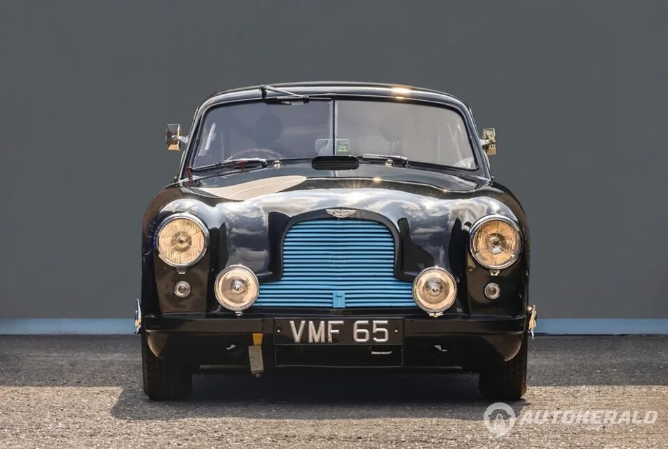
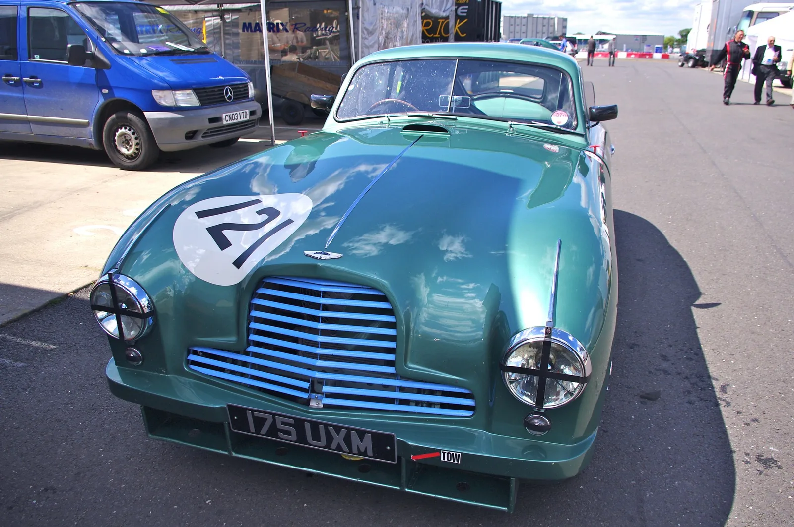

▲ 애스턴마틴 DB12 S VMF. 1951년 르망 24시에 출전했던 DB2 레이싱카 3대에서 영감받아 제작된 한정판이다
애스턴마틴이 특별한 헤리티지 한정판 3종, 'DB12 S VMF'를 공개했습니다. 이 한정판은 애스턴마틴이 1951년 처음 참가한 페블비치 콩쿠르 델레강스 75주년을 기념하는 프로젝트로, 당시 르망 24시 출전을 위해 제작돼 1950년대 초반까지 다양한 레이스에 참전했던 DB2 레이싱카 3대에서 직접 영감을 받았습니다.
1. 색깔로 구분되는 세 대의 헤리티지
DB12 S VMF는 각각 VMF 63(로쏘 레드), VMF 64(스피드 옐로), VMF 65(엘우드 블루)로 이름 붙여졌습니다. 세 차량 모두 카본 블랙 외장을 기본으로 하되, 각기 다른 컬러의 프런트 그릴 베인과 카본 파이버 사이드 스트라이크로 개성을 드러냅니다. 실내 역시 각 외장 색상에 맞춘 대비 스티칭을 적용해, 세 대가 한 세트이면서도 각자 뚜렷한 정체성을 갖도록 디자인됐습니다.

▲ 나란히 선 DB12 S VMF 63·64·65. 로쏘 레드, 스피드 옐로, 엘우드 블루로 각각 구분된다
2. '75' 라운델에 담긴 의미
세 차량의 펜더에는 공통적으로 '75' 라운델 그래픽이 새겨져 있습니다. 이는 애스턴마틴이 페블비치 콩쿠르 델레강스에 처음 참가한 지 75주년이 됐다는 것을 상징합니다. 페블비치는 전 세계에서 가장 권위 있는 클래식카 품평회로 꼽히는 자리로, 애스턴마틴에게도 브랜드의 헤리티지를 알리는 중요한 무대였습니다. 이번 한정판은 단순한 스페셜 에디션을 넘어, 브랜드가 75년간 쌓아온 모터스포츠와 콩쿠르 문화의 역사를 현재 라인업에 녹여낸 헌정작에 가깝습니다.
| 모델명 | 색상 |
|---|---|
| VMF 63 | 로쏘 레드 |
| VMF 64 | 스피드 옐로 |
| VMF 65 | 엘우드 블루 |

▲ 1951년 르망 24시에 출전했던 애스턴마틴 DB2. 이 세 대의 레이싱카가 이번 DB12 S VMF 프로젝트의 직접적인 모티브가 됐다
3. 1950년대 레이스카의 후예
모티브가 된 원본 DB2 레이싱카 3대는 1950년 르망 24시 출전을 위해 제작된 이후, 1950년대 초반까지 유럽 각지의 다양한 레이스에 참가했던 실제 경주차입니다. 당시 애스턴마틴은 아직 지금과 같은 럭셔리 GT 브랜드로 자리 잡기 전, 모터스포츠를 통해 브랜드의 성능과 내구성을 증명해야 했던 시기였습니다. 그 시절의 투지를 오늘날의 플래그십 GT인 DB12 S에 이식했다는 점에서, 이번 프로젝트는 애스턴마틴이 헤리티지를 다루는 방식을 잘 보여주는 사례입니다.

▲ DB12 S 쿠페 컬렉션. 세 대 모두 카본 파이버 사이드 스트라이프와 컬러 포인트로 통일감을 유지하면서도 각자의 개성을 드러낸다
4. 정리 — 몬터레이 카위크의 또 다른 하이라이트
DB12 S VMF의 정확한 생산 대수와 가격은 아직 공개되지 않았지만, 페블비치 콩쿠르 델레강스와 몬터레이 카위크 기간에 맞춰 공개된 만큼 극소량 한정 생산될 가능성이 높습니다. 클래식카 경매와 헤리티지 이벤트가 몰리는 이 시기에, 애스턴마틴은 판매보다 브랜드 스토리텔링에 방점을 찍은 것으로 보입니다. 75년 전 서킷을 누비던 레이싱카의 정신이, 오늘날 애스턴마틴의 플래그십 GT에 어떻게 살아있는지를 보여주는 상징적인 공개였습니다.